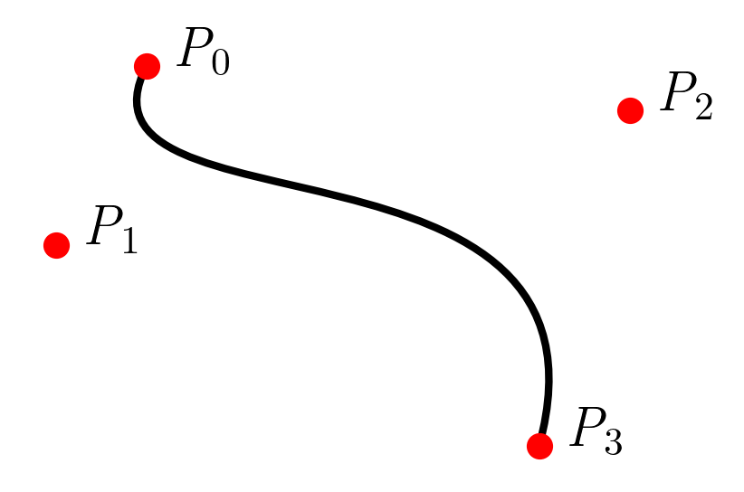

A good approximation for the length of Bézier curves has been lacking for my OpenSCAD Bézier curve code and now I have been fixing it. All the Jupyter notebook code is on GitHub.
I've approached it this way:
- Create Bézier curves from random points. Those curves look wild.
- Run linear regression with the distances of the points as x and the length as y. This made the formulae below.
- Test model on curves of my former design projects (cookie cutters). Works fine / good prediction.
Given a curve with the points labeled as such:

The formula for a curve with three points is:
L= 0.43 · |P0 - P1|
+ 0.53 · |P0 - P2|
+ 0.43 · |P1 - P2|
The formula for a curve with four points is:
L= 0.35 · |P0 - P1|
+ 0.40 · |P0 - P2|
+ 0.23 · |P0 - P3|
- 0.09 · |P1 - P2|
+ 0.40 · |P1 - P3|
+ 0.35 · |P2 - P3|
The formula for a curve with five points is:
L= 0.32 · |P0 - P1|
+ 0.35 · |P0 - P2|
+ 0.23 · |P0 - P3|
+ 0.10 · |P0 - P4|
- 0.13 · |P1 - P2|
+ 0.20 · |P1 - P3|
+ 0.23 · |P1 - P4|
- 0.13 · |P2 - P3|
+ 0.35 · |P2 - P4|
+ 0.32 · |P3 - P4|
Text last updated: December 22nd 2024